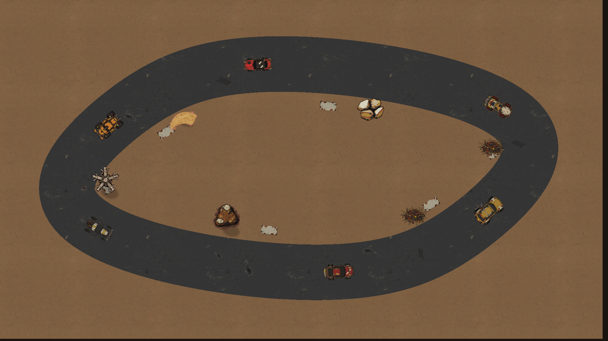
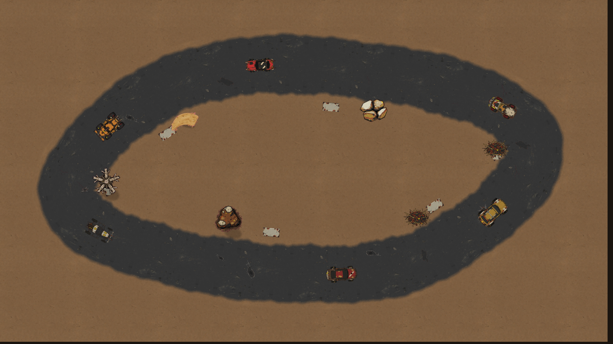

Owner fusion review · Cost report · Evidence index · Earlier V3 experiments
Natural wear, baked once.
Stick AFTKM, two runs per variant at 1080p: natural edges 16.69/17.89 ms p50/p95; matched control 16.70/18.11 ms. Full art allocation 31.25 MiB (+0.50 MiB ribbon); cached course vertices 28,800 bytes. Short isolated renderer measurements, not a full-game soak.


Hard-edge controlBaked natural edgesThe two scenes share seed 713, sixteen decals, six cars, six props and six barriers. Dirt encroachment, sparse rubber and worn paint are baked into a 512×256 ribbon. Its 360 quads are cached once; no band rebuilding occurs per frame. Tall crowns use ground shadows and foot-position sorting. Collision footprints remain metadata for a later core hook.
| Variant | p50 ms | p95 ms | CPU p50 ms | Draws | Area proxy | Art MiB |
|---|
| fusion-control | 16.703 | 18.106 | 2.228 | 9.313 | 1.408 | 30.750 |
| fusion-natural | 16.693 | 17.891 | 2.163 | 9.313 | 1.491 | 31.250 |
Four short runs, forward then reverse order. Values above average the two run percentiles; raw arrays and repeat ranges are retained. Tiny timing differences are within run variation. The natural variant adds 0.5 MiB and no extra ribbon draw. PSS includes runtime memory and is separate from RGBA texture accounting. One backdrop and both 1024² car pages were allocated.
glFinish instrumentation serializes work; completion is CPU/GPU wall time, not GPU timer. PSS sampled once per run before PNG encoding. All atlas/material pages resident but only representative scene regions drawn. No gameplay, collision hook, full-game FBO, or thermal soak.
Only dev.deathride.artlab was installed. Both session readbacks confirm the integration installation was unchanged and its prior activity restored.